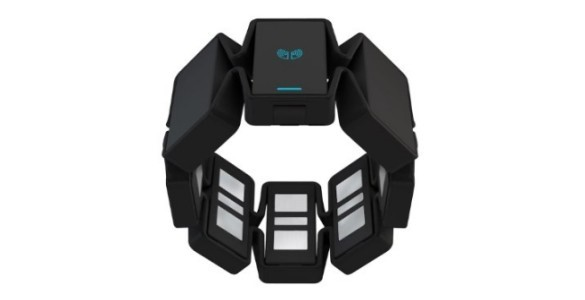

by Pieter van der Meer / Casper Koning
A gyroscope (from Greek γῦρος gûros, "circle" and σκοπέω skopéō, "to look") is a spinning wheel or disc in which the axis of rotation is free to assume any orientation. When rotating, the orientation of this axis is unaffected by tilting or rotation of the mounting, according to the conservation of angular momentum. Because of this, gyroscopes are useful for measuring or maintaining orientation.
An accelerometer is a device that measures proper acceleration ("g-force"). Proper acceleration is not the same as coordinate acceleration (rate of change of velocity). For example, an accelerometer at rest on the surface of the Earth will measure an acceleration g= 9.81 m/s2 straight upwards. By contrast, accelerometers in free fall orbiting and accelerating due to the gravity of Earth will measure zero.
are measurement instruments used for two general purposes: to measure the magnetization of a magnetic material like a ferromagnet, or to measure the strength and, in some cases, the direction of the magnetic field at a point in space. The first magnetometer was invented by Carl Friedrich Gauss in 1833 and notable developments in the 19th century included the Hall Effect which is still widely used.
Electromyography (EMG) is an electrodiagnostic medicine technique for evaluating and recording the electrical activity produced by skeletal muscles. An electromyograph detects the electrical potential generated by muscle cells when these cells are electrically or neurologically activated. The signals can be analyzed to detect medical abnormalities, activation level, or recruitment order, or to analyze the biomechanics of human or animal movement.

{
"timestamp":1444576298645054,
"emg":[-1,1,-19,3,-2,-1,-1,-1],
"quaternion":
{"x":0.2047119140625,"y":0.03863525390625,
"z":0.497802734375,"w":-0.8419189453125},
"eulerAngles":
{"roll":8.073104875684132,"pitch":7.440364954500165,
"yaw":6.068574741275333},
"acceleratorMeter":
{"x":0.2763671875,"y":-0.31884765625,"z":0.935546875},
"gyro":
{"x":-0.375,"y":1.8125,"z":-0.5625}
}